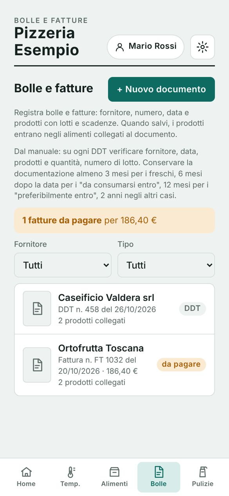

1
Apri «Bolle» e tocca «+ Nuovo documento»
Nella barra in basso tocca Bolle. Vedi tutti i documenti ricevuti, filtrabili per fornitore e per tipo, e in alto quante fatture sono ancora da pagare.
Quando arriva il fornitore, tocca + Nuovo documento.
